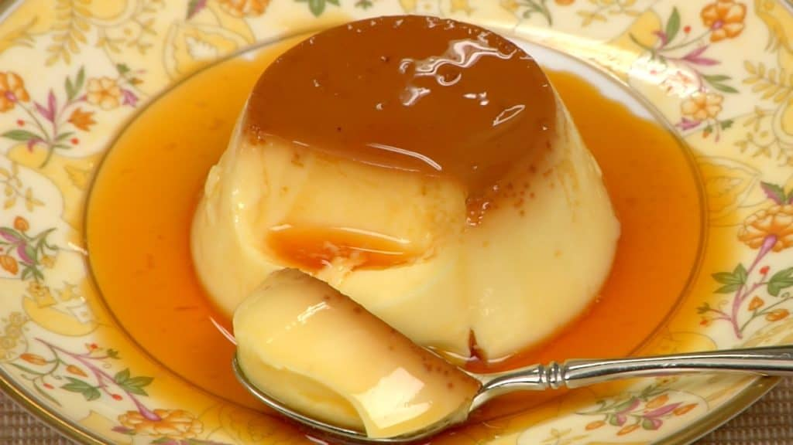

This scrumptious Custard Pudding is made from simple ingredients,
eggs, sugar and milk. Chill it well to enjoy the pudding.
HOW TO CUSTARD PUDDING
INGREDIENTS
- 4 tbsp Granulated Sugar
- 1 tbsp Water
- 1 1/2-2 tbsp Hot Water
- 2 Eggs
- 250 ml Milk
- 5 tbsp Granulated Sugar
INSTRUCTIONS
- Put the sugar and water in the pot. Heat the pot at medium heat.Let it sit until the surface becomes lightly-colored.
Swirl the pot and even out the sugar liquid.Remove the pot from the heat.
- Quickly add the hot water in 2 to 3 steps with a long-handled ladle. Tilt the pot away from you to avoid hot caramel
sauce splashing and burning your hand. Swirl the pot and even out the hot caramel.Pour the caramel evenly into the custard cups.
- Let’s make the egg mixture for pudding. Crack the two eggs into a bowl. Lightly beat the egg with a balloon whisk. Don’t let the tip of the
whisk leave the bottom of the bowl to avoid creating too much foam.
- Add the milk and sugar in a pot. Turn on the burner. Stir with a spatula until all the sugar is dissolved.
- Add the milk to the beaten egg while whisking the mixture.
- Sieve the egg mixture with a fine mesh strainer. Scrape off the bottom of the strainer with a spatula. Remove any foam on the surface
with a spoon. Pour the egg mixture into an easy-to-pour container.
- Gently fill the custard cups with the egg mixture.Cover each cup with aluminum foil. The foil will prevent the surface from getting dry.
It will also help steam the pudding evenly.
- Heat water in a pan and gently place the cups in it. The kitchen towel will soften the heat at the bottom. There should be enough hot water
to cover the bottom half of the cups. Put the lid on.Keep the water temperature just below the boiling point and steam the pudding for 18 to
20 minutes.
- Let’s serve the custard pudding. Scrape the side of the cup with the tip of a knife. Tap the cup on a kitchen towel and make a space around
the pudding.